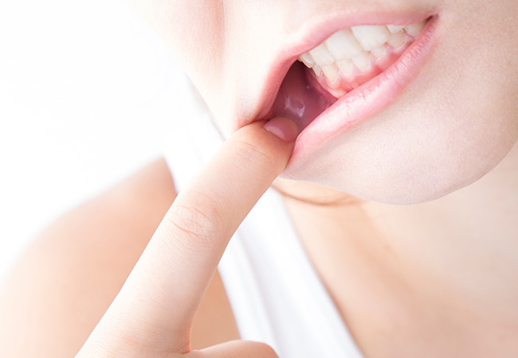
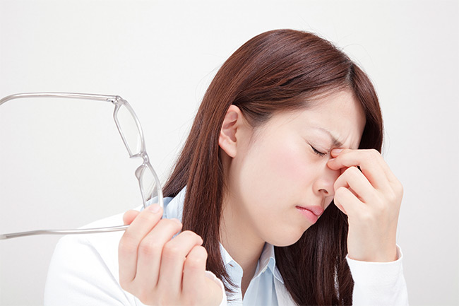
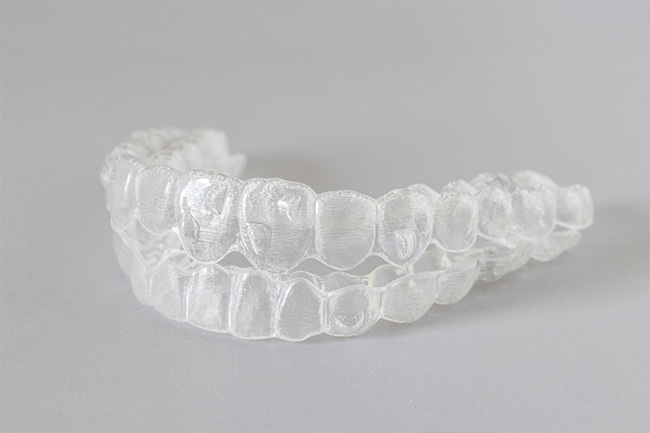
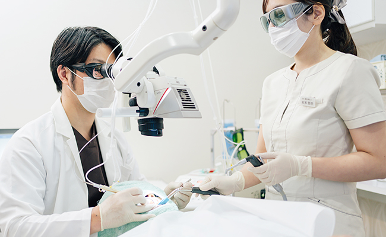

お口まわりの外科処置を行います
～歯科口腔外科～
歯科口腔外科とは、お口まわりの外科処置を行う歯科診療項目です。三島駅・下土狩駅の近くの歯医者「MI総合歯科クリニック」は、歯科口腔外科に対応し、顎関節症や睡眠時無呼吸症候群、そのほかお口まわりのケガなどのさまざまな症状の治療にあたります。また特殊な治療や手術が必要な場合には、専門医療機関へのご紹介もいたしますので、まずは当院にご相談ください。
顎関節症の治療について
顎関節症とはあごの筋肉の痛み、関節の音や機能障害がおもな症状の慢性疾患の総称です。原因ははっきりとはしていませんが、頬杖などのクセや柔食化（やわらかい食べ物が多い食生活）など、生活習慣が影響しているといわれています。
TCH（歯列接触癖）や歯ぎしりが顎関節症を招く可能性があります

TCH（歯列接触癖）や歯ぎしりが顎関節症を招く可能性があります
TCHとは、起床中であっても無意識に上下の歯を接触させてしまうクセのことです。本来、唇を閉じているときでも、上下の歯の間にはすき間があいていて接触しません。しかしTCHになると、口を閉じた状態で自然に歯が咬み合い、接触した状態が続くので、歯ぎしりと同じように歯を傷つけたり、あごに負担をかけたりしてしまいます。このような状態が続けばあごの筋肉だけでなく、顎関節が緊張することで血行も悪くなります。こうしたことが原因となり、顎関節症が発症する可能性があるのです。
顎関節症のチェックシート
ご自身でできる簡単チェックシートです。下記のチェック項目はいずれも顎関節症によって引き起こされる可能性がある症状です。3つ以上あてはまる項目がある方は顎関節症の疑いがあります。
- 近ころ、大きなストレスを感じた
- 寝ているときに歯ぎしりをしているといわれた
- 頬杖をよくついてしまう
- 寝るときはほとんどうつ伏せだ
- 食べ物を片側のあごばかりで咬んでしまう
- 歯並びや咬み合わせが悪い
- うつ病をわずらっている
- 不眠症だ
- 姿勢が悪い
- 猫背気味だ
- 仕事に大きなプレッシャーがある
- 食事や会話であごに疲れを感じる
- あごを動かしたときに痛む
- 物を咬むと耳のまわりが痛む
- 大きくあくびができない
- 縦に3本重ねた指が口に入らない
- 咬んだときに耳の周辺がシャリシャリという
- 頭痛、肩こりに悩まされている
PICKUP少しでも気になる方はお気軽にご相談ください
顎関節症は初期の段階で受診すれば、比較的簡単な治療のみで改善が期待できます。歯科口腔外科というと大学病院など、大きな医療機関の範疇のように感じられるかもしれません。「大きな病院に行くのは気おくれする」という方にこそ、お越しいただければと思います。
睡眠時無呼吸症候群について

睡眠時無呼吸症候群とは、寝ているときに呼吸が止まってしまっている症状のことを指します。脳に酸素が行き渡らなくなってしまうので、酸素不足となった脳は呼吸をするために一時的に覚醒するよう命令を出します。これが一晩に何百回とくり返されると睡眠不足になり、日中に眠たくなったり、そのほかさまざまな病気につながったりという危険性があるのです。
おもな症状と合併症
| おもな症状 | 合併症 |
|---|---|
|
|
当院で行う治療法
マウスピース（口腔内装着）

マウスピース（口腔内装着）
マウスピースを装着して、下のあごを前に出し、睡眠中に気道が閉じない状態に保つ処置です。患者様への負担が少なく、出先にも持ち歩けるという特徴があります。マウスピースには、保険診療の「一体型」と自費診療の「分離型」の2種類があります。マウスピースは患者様一人ひとりに合わせて製作するので、まずはお気軽にご相談ください。
| 一体型 | 分離型（ソムノデント） |
|---|---|
| 従来からあるタイプのマウスピースです。上下がつながっていて「ひとかたまり」なので、装着中に会話をしたり、お水を飲んだりすることはできません。保険適用なので、費用面での負担は少なめです。 | 上下が分割したタイプのマウスピースです。装着したまま会話ができ、お水も飲めます。また、装着時の違和感も少なく、就寝中にお口が開いてしまっても、いびきを抑制する効果があります。分離型は保険適用外です。 |
レーザーによる治療

レーザーによる治療
顎関節症などを原因とする顎の痛みは、レーザーによる治療で軽減できるケースもあります。痛みのある部分にレーザーを照射することで、溜まってしまっている老廃物を除去。これにより血行が促進され、筋肉の動きが良くなり、痛みの症状が和らいでいく可能性があります。